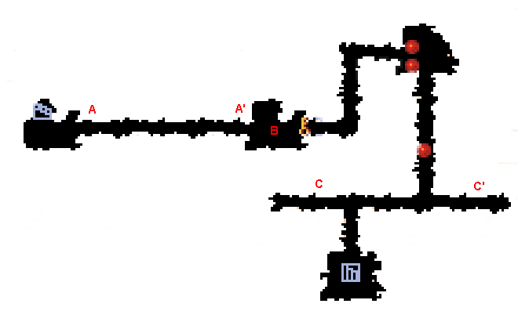
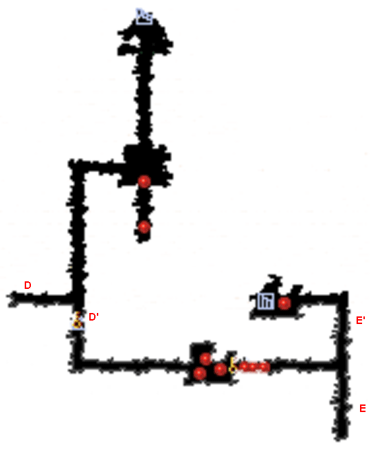
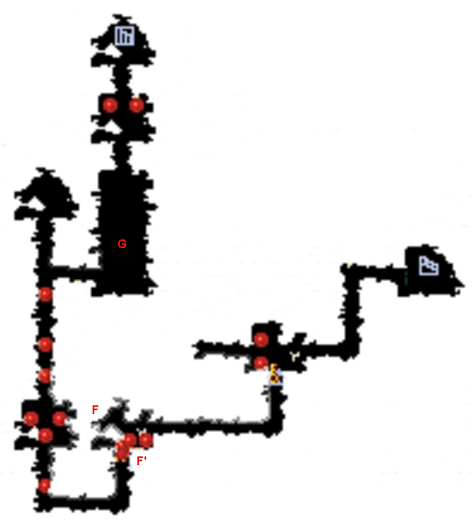

| 概要 | 情報 | アイテム一覧 |
| 敵キャラ一覧 | ステージ一覧 | 夢幻迷宮について |
| 攻略チャート | Zwei!! 攻略へ |
| ステージ選択へ |
ケノーピ火山 Lv.6
|  | |
| A | A地点の風船を破壊すると、AからA'地点の間にトゲが降ってきます。 トゲよりも早くA'地点へたどり着かないとそれ移譲先に進めなくなります。 |
| B | B地点は風船があります。1つ壊すと別の場所にまた現れます。 全部で4個破壊すると扉が開きます。 |
| C | C、C'地点はトゲが移動しています。ぶつからないようにしましょう。 |
|  | |
D |
D地点のボタンスイッチを押すと、DからD'地点まで罠が降ってきます。 それと同時にD'地点の扉が開くので、ダメージを受けぬようにD'地点を通過しましょう。 |
| E | EからE'地点までトゲが移動しています。 また、E'地点には炎の障壁があるので、宝玉の装備を忘れずに。 |
|  | |
| F |
F地点のボタンスイッチをONにすると、F'地点の扉が開きます。 |
| G |
G地点のボタンスイッチをONにすると、トゲが動き始めます。 それと同時に敵がたくさん降ってくるので、ダメージを受けないように全て倒しましょう。 |
| ステージ選択へ |
| 概要 | 情報 | アイテム一覧 |
| 敵キャラ一覧 | ステージ一覧 | 夢幻迷宮について |
| 攻略チャート | Zwei!! 攻略へ |
Zwei!!
| 目次へ戻る | ページの上部へ |